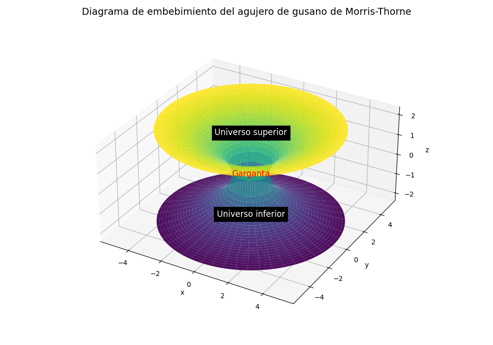

Simulación en Tiempo Real de un Agujero de Gusano de Morris-Thorne
Autor: Álvaro Pérez García | Tutor: Dr. Iván Martí Vidal
Trabajo de Fin de Grado en Física | Universitat de València (Junio de 2025)
Simulador Interactivo (Versión Web de Prueba)
Controles:WASD para moverte, SHIFT/CTRL para subir y bajar, Ratón para orientar la cámara, Q/E para rotar la nave.
Pulsa las teclas T (abrir) y G (cerrar) para modificar el radio de la garganta en tiempo real. Pulsa F para lanzar pelota.
Experimenta la simulación a máxima calidad
Los navegadores web limitan el rendimiento de los cálculos relativistas pesados en la GPU. Para una experiencia fluida, con resolución nativa y el algoritmo Runge-Kutta 4, se recomienda descargar la versión de escritorio.
Este proyecto presenta una visualización interactiva en tiempo real de un agujero de gusano estático y con simetría esférica descrito por la métrica de Morris-Thorne. La propagación de la luz en este espacio-tiempo curvo se ha resuelto numéricamente mediante el trazado de rayos inverso y la integración de las geodésicas nulas utilizando un algoritmo de Runge-Kutta de 4º orden (RK4).
La Métrica de Morris-Thorne
Propuesta en 1988 por Michael Morris y Kip Thorne para describir un agujero de gusano transitable sin horizonte de sucesos, el elemento de línea en coordenadas de tiempo global \(t\) y radial \(l\) se expresa como:
Donde \(b_0\) representa el radio de la garganta del agujero de gusano en el punto de transición \(l = 0\), conectando dos regiones asintóticamente planas (\(l > 0\) y \(l < 0\)).

Diagrama de embebimiento del agujero de gusano en el espacio euclídeo.
Efectos Físicos Simulados
1. Lente Gravitacional
La extrema curvatura del espacio-tiempo en las proximidades del agujero de gusano actúa como una lente gravitacional que desvía la trayectoria natural de los rayos de luz. Esto provoca una distorsión visual muy pronunciada en los objetos de fondo que se observan cerca del horizonte de la garganta.
Visualización de la distorsión del espacio-tiempo en la garganta.
2. Efecto de Rotación Inversa
Al orbitar alrededor del agujero de gusano en un universo, la proyección geométrica de las geodésicas al cruzar la garganta provoca que la imagen del universo opuesto vista a través de la garganta rote en la dirección opuesta a nuestro movimiento.
Demostración dinámica del efecto de rotación inversa al orbitar la garganta.
3. Límite de Minkowski
Al reducir el radio de la garganta (\(b_0 \to 0\)), la curvatura disminuye gradualmente hasta recuperar de forma exacta la métrica plana usual de Minkowski (el espacio plano habitual de la Relatividad Especial), desapareciendo todo efecto de lente gravitacional.
Transición interactiva desde la métrica de Morris-Thorne al espacio plano de Minkowski.